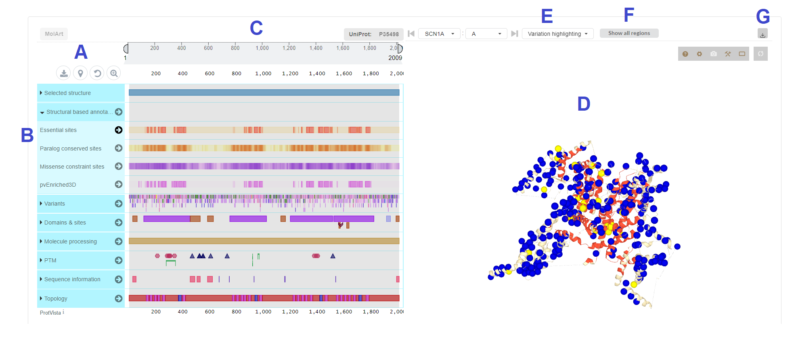

Summary
Neurodevelopmental disorders (NDDs) are a heterogeneous group of conditions involving various forms of disruption to brain development. Several hundreds of genes have been found to be associated with NDDs thus far. However, NDDs are complex and mutations in NDD associated genes are not straightforward to conceptualize at the molecular level, for which three-dimensional (3D) structures of proteins provide an informative mean.
We develop a consensus approach by overlaying evolutionary and population based genomic scores to identify 3D essential sites (Essential3D) in protein structures. We identify and characterize Essential3D sites in experimental and predicted structures for 242 NDD proteins on domain.
Here, we present the ES-NDD browser.The tool provides access to the aggregation of experimentally and predicted 3D monomeric structures as well as multimeric protein complexes for 242 NDD associated genes and their characterization using a consensus approach to identity Essential3D sites by overlaying evolutionary and population based genomic scores. With ES-NDD a user is able to interactively explore Essential3D sites, that are paralog conserved, population constraint and enriched for pathogenic variants in the 3D structures. These sites can be visualized alongisde of 87,028 population variants aggregated from gnomAD 9,241 pathogenic (likely-pathogenic) variants from ClinVar and HGMD as well as variants collected across the currently largest autism, developmental disorders, and epilepsies exome sequencing studies including >360,000 NDD patients and population controls.
For details please refer to the associated publication.
How to use the Essential3D Viewer
- (A) A user selects the gene of interest and (B) selects one of the available structure types (monomeric-PDB, multimeric-PDB or AlphaFold predicted structures). (C) In case a monomeric-PDB or multimeric-PDB structure was selected a user can then in addition choose one of the available structures from the protein data bank (PDB). Once the desired structure is chosen a click on the “show” button will forward the user to the interactive interface of the selected structure. A) A user selects the gene of interest, (B) selects one of the available structure types and (C) decides which protein chain (for multimeric-PDB set) of the protein structure will be chosen.
- Now a user can choose any available annotation from the bar (A), to display single 3D-scores as well as our consensus Essential3D annotation to discover essential regions on the linear protein sequence (B) and on the selected protein structure (C). Further, to bring the highlighted regions into context of available variants, variants from gnomAD, ClinVar and HGMD can be visualized in the 3D protein structure together with several functional and domain annotations from Uniprot.
- The interface shows the linear protein sequence (C) and protein structure (D) of the selected protein. The annotation bar on the left (A) enables a user to display the structure-based annotations including Essential3D sites (B) on both, the linear protein sequence and the protein structure. In addition, many protein specific information such as domains, posttranslational amino acid modifications, or the topology can be visualized. Using the “variation highlighting” button (E) a user can map missense variants from gnomAD, pathogenic variants from ClinVar and HGMD as well as other variants obtained from autism, developmental disorders, and epilepsies exome sequencing studies on the 3D protein structure. (F) In case a structure predicted by AlphaFold is chosen, the shown residues can be limited to regions with a good prediction quality (high or confident model confidence, for details see https://alphafold.ebi.ac.uk/).